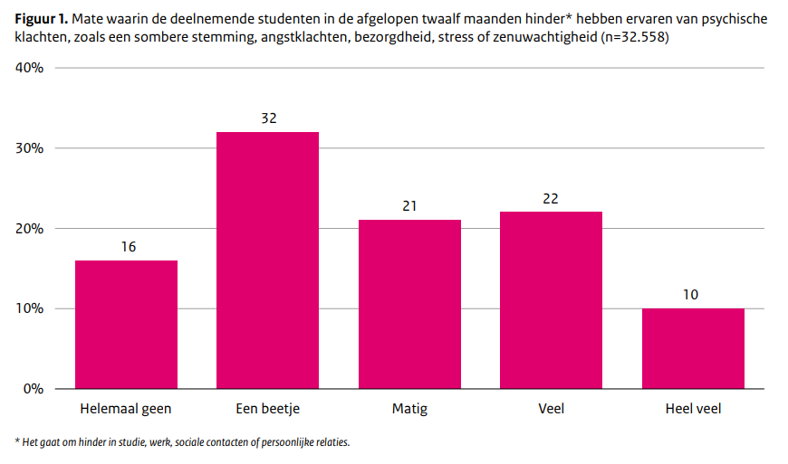

Afb1. Grafiek van Rijksoverheid.nl over een onderzoek onder studenten en psychische klachten (2023)
Artikel
Afb2. De ziekte van nu, sociaal isolament. Het gevolg van social media.
Artikel
Afb3. Met de toename van onze schermtijd op sociale media worden we onbewust steeds asocialer, we verleren hoe om te gaan met andere mensen en dus hoe sociaal te zijn.